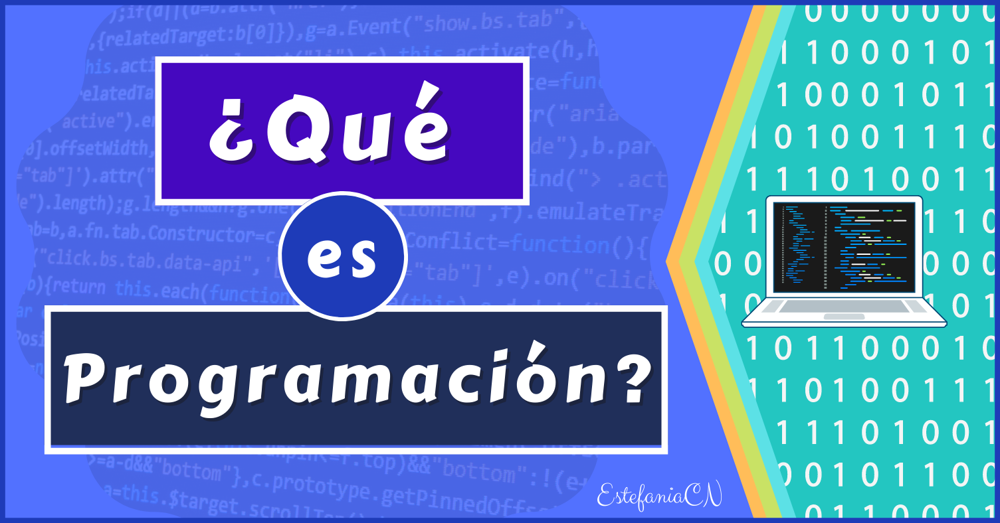
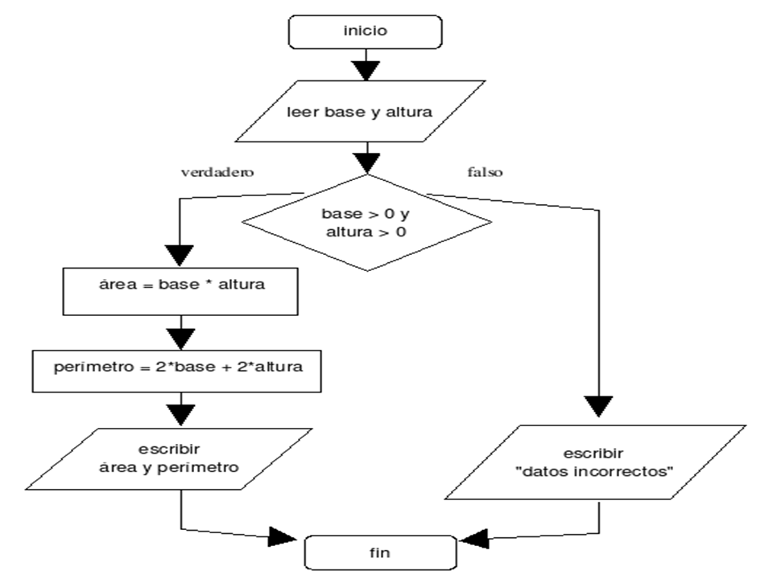
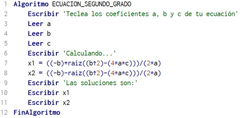
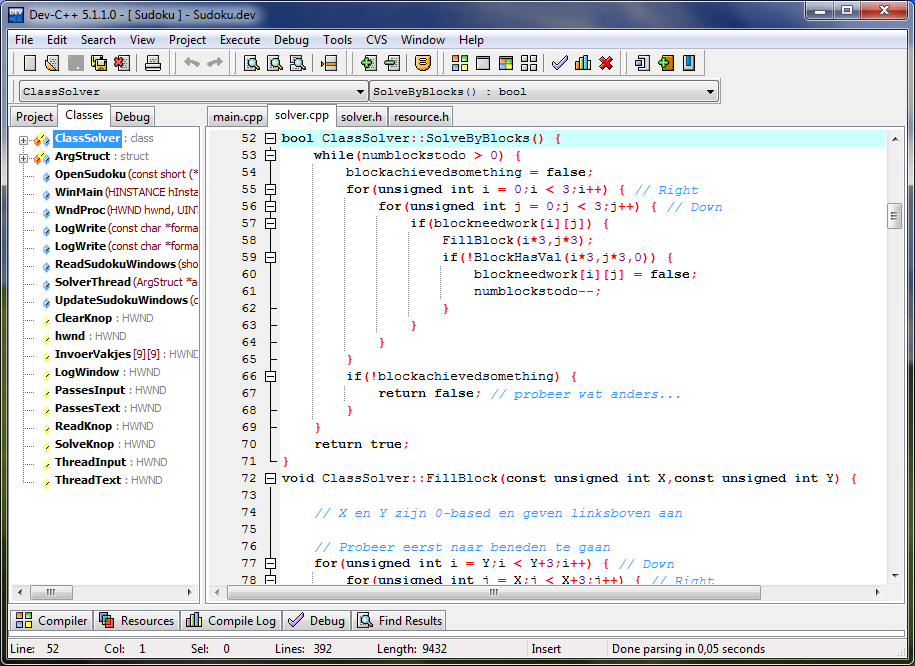

Para iniciar en la programación, elige un lenguaje sencillo como Python o JavaScript, que tienen una sintaxis fácil de entender. Aprende los fundamentos básicos, como variables, condicionales, bucles y funciones. Practica con proyectos pequeños, como una calculadora o un juego básico, para aplicar lo que aprendes. Usa plataformas en línea como Codecademy o freeCodeCamp para guiarte en el proceso. Resuelve ejercicios prácticos en sitios como HackerRank para mejorar tus habilidades de resolución de problemas. Por último, sé paciente y constante, ya que la programación mejora con la práctica diaria.
Temas de Interés



Los diagramas de flujo en PSeInt representan gráficamente el flujo de un algoritmo, mostrando el orden y las decisiones que se toman, lo que ayuda a visualizar y entender el proceso de resolución de problemas de manera más clara.
El pseudocódigo, su propósito es facilitar la comprensión de la lógica antes de implementarla en un lenguaje de programación formal. No sigue reglas estrictas de sintaxis, lo que lo hace accesible para cualquier persona.
La programación en C es ideal para crear desde pequeños proyectos educativos hasta sistemas más complejos, como aplicaciones de escritorio, simulaciones y algoritmos.